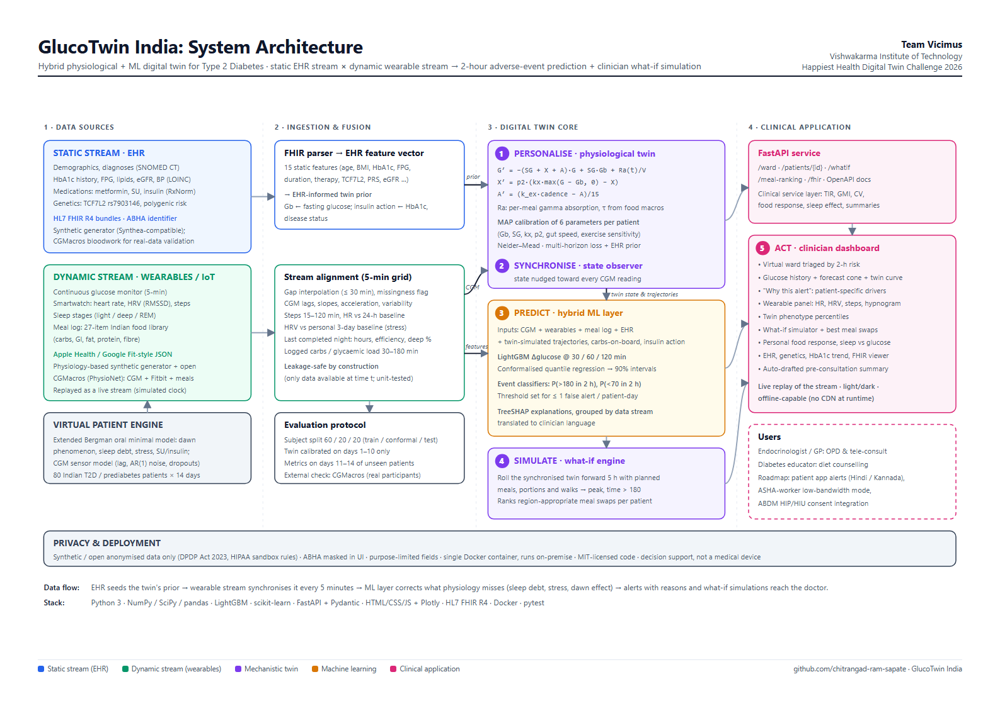
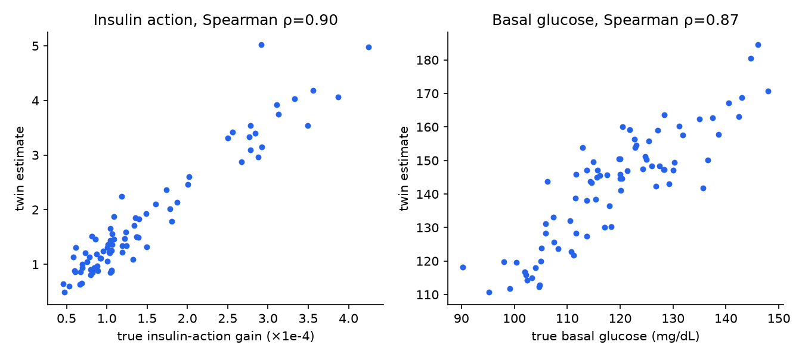
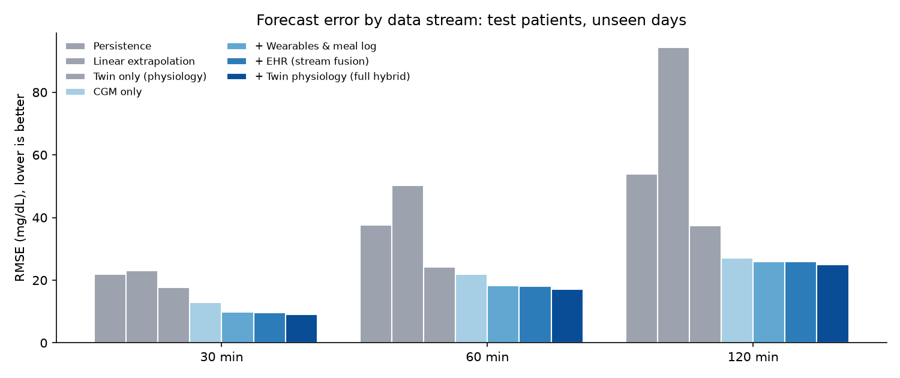
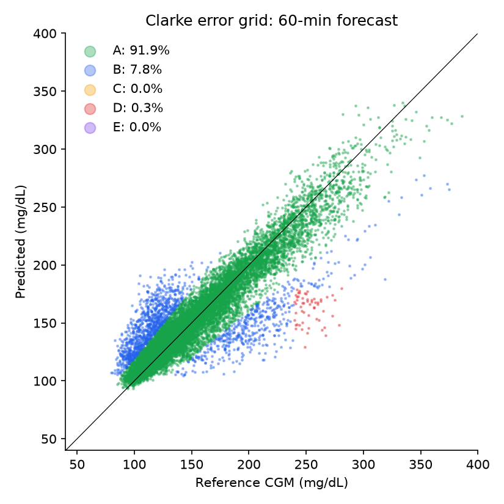
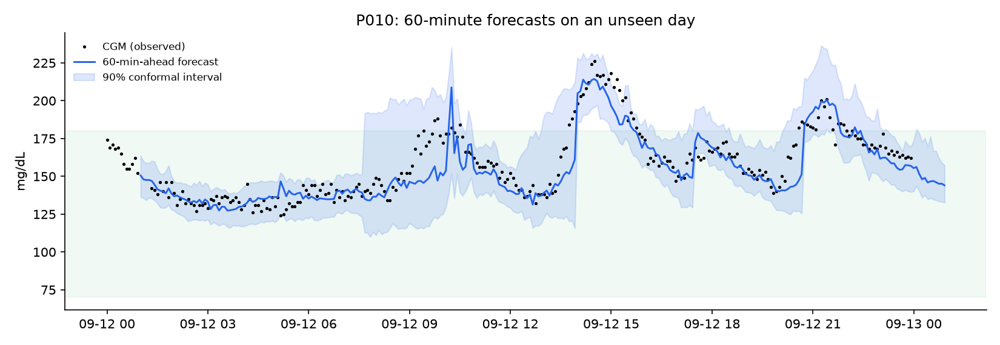
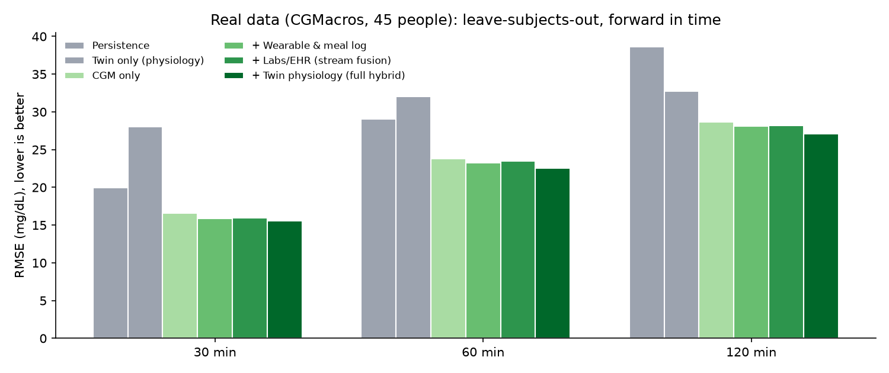
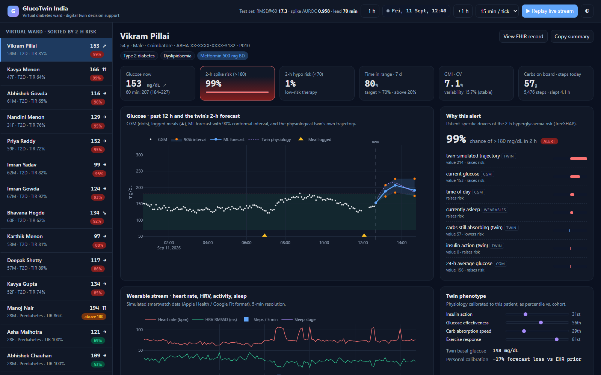
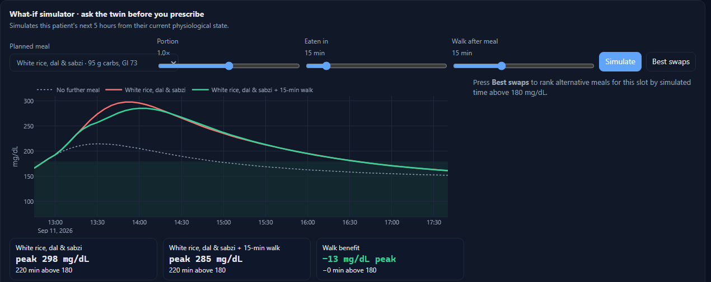

The challenge: fuse the static record (EHR) with the dynamic stream (wearables) into a model that predicts adverse events before they happen and that a doctor can actually use.
Forecasts glucose at 30 / 60 / 120 min with calibrated uncertainty, and flags excursions above 180 mg/dL early enough to act: a walk or a smaller portion.
The doctor simulates meals, portions and post-meal walks on this patient's own calibrated physiology and sees the curve before prescribing.
Every alert lists its patient-specific drivers (meal, sleep debt, HRV, trend, physiology) and a pre-consultation summary is drafted automatically.
Who uses it: endocrinologists and GPs in OPD and tele-consults, diabetes educators for diet counselling. Next: patients and ASHA workers via vernacular alerts.
Six physiological parameters fitted to each patient, starting from a prior built from their EHR.
A state observer pulls the twin toward every new CGM reading. The twin is always "now".
ML learns what physiology leaves out (sleep debt, stress, dawn effect) from the wearable + EHR streams.
Mechanistic core answers counterfactuals that a pure ML model cannot.
Triage, explanations and summaries in the doctor's workflow.
Static: demographics, diagnoses, HbA1c history, labs, medications, TCF7L2 genotype, polygenic risk (HL7 FHIR R4)
Dynamic: CGM, heart rate, HRV, steps, sleep stages, meal log (Apple Health / Google Fit-style)

No real identifiable data · DPDP Act 2023 & HIPAA sandbox rules · ABHA masked in UI · runs on-premise in one container

The twin recovers the hidden physiology of each synthetic patient: Spearman ρ = {{rho_kx}} (insulin action), {{rho_gb}} (basal glucose). Personal calibration cuts the twin's forecast loss by {{calib_gain}}% vs the EHR-only prior.
The alert threshold is chosen as the most sensitive operating point with ≤ 1 false alert per patient-day on held-out patients, not by maximising a statistic. Alerts must persist 10 min and are snoozed for 60 min, like CGM alarms.
TreeSHAP contributions are grouped by data stream and translated into plain language: "carbs eaten in the last hour", "sleep debt", "HRV below personal baseline".
Every feature uses only data available at time t. A unit test perturbs the future and checks that present features do not change.



| Horizon | RMSE | MARD | Clarke A | 90% PI coverage |
|---|
| Model (leave-subjects-out) | RMSE@30 | @60 | @120 |
|---|
Twin calibrated on the first 60% of each recording; ML never sees the test participants; metrics on the last 40%. {{real_events}}
No HRV or sleep staging in CGMacros, activity from Fitbit METs, and the cohort is American. The same pipeline ran with a single adapter.



No further meal vs. rice-dal-sabzi vs. the same meal + a 15-min walk, simulated from the patient's current state.
Ranks region-appropriate alternatives by simulated time above 180 mg/dL for this patient.
From the patient's own logs: white rice +90 mg/dL vs jowar roti +53 mg/dL.
27 dishes (idli, dosa, poha, paratha, rajma chawal, biryani, ragi, jowar, chai-biscuits…) with GI and macros driving absorption.
Diabetes at lower BMI, higher insulin resistance, TCF7L2 risk alleles, polygenic risk.
HL7 FHIR R4 resources and ABHA identifiers, ready for HIP/HIU consent flows.
Synthetic / anonymised data, masking, purpose limitation, on-premise single-container deployment.
Auto-drafted narrative (TIR, GMI, variability, food response, sleep effect, phenotype) with discussion points, so a 5-minute OPD slot starts informed.
Works with affordable 14-day CGMs and any smartwatch; next: Hindi / Kannada alerts and an ASHA-worker low-bandwidth mode.
Team Vicimus · Vishwakarma Institute of Technology
Chitrangad Ram Sapate · Soham Joshi
Code (MIT): github.com/chitrangad-ram-sapate/Vicimus_Vishwakarma-Institute-of-Technology
Run: python -m glucotwin.pipeline && uvicorn glucotwin.api:app